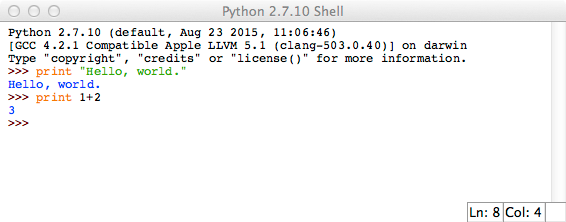

4.5. Python by Example¶
Contents
- Python by Example
- Reference Links
- Preparation
- Using Python as a Calculator
- First Steps Towards Programming
- Interlude: Running Code from Files
- if Statements
- for Statements
- The
range()Function - break and continue Statements, and else Clauses on Loops
- pass Statements
- Defining Functions
- More on Defining Functions
- More on Lists
- The del statement
- Tuples and Sequences
- NumPy: Efficient Numerical Computation
- Acknowledgement
This section presents a crash course in the Python programming language through a series of examples. The bulk of the examples are derived directly from the first part of the official Python 2.7 Tutorial, modified somewhat to emphasize the features I tend to use in physical computing systems. This is not intended to replace any of the many excellent on-line Python courses available, it is only intended to serve as notes for an in-class tutorial or as a quick review aid for those who have used the language before.
Python has two distinct ‘current’ versions, since Python 3 introduced incompatible language changes, but many projects have stuck with the stable Python 2.7 version. Many OS distributions still only provide 2.7 by default in order to maintain compatibility with existing libraries and code. Right now, the latest stable releases available are Python 3.4.3 and Python 2.7.10.
I recommend using Python 2.7 for this course as that is the version under which the examples are tested. Our intention is that the library code should all eventually be cross-compatible. The following tutorial however is specific to 2.7 for ease of getting started.
4.5.1. Reference Links¶
If you are learning the language on your own or for the first time, you may wish to start with a full-featured tutorial or online course:
- Python 2.7 Tutorial, from python.org
- Python 3.4 Tutorial, from python.org
- Beginner’s Guide to Python, from python.org
- Learn Python the Hard Way, online book with very hands-on approach
- codecademy Python course, online interactive course
- MIT edX 6.001 Intro to CS, complete course
4.5.2. Preparation¶
Python is a text-based interpreted language and so tutorial presentation involves several ways of testing code:
- typing (or pasting) Python code directly to an interactive interpreter from the system command line (e.g. see Using the Python Interpreter)
- writing Python code in a syntax-aware text editor and then running it from the command line (e.g. see Exercise 0: The Setup)
- working within an Integrated Development Environment (IDE), a general term for a system for editing, running, and debugging code within one application (e.g. see One Day of IDLE Toying)
Just getting your computer set up to run your very first line of code can be a messy problem which stalls beginners. For simplicity, I will assume you are using IDLE, a simple IDE which comes standard with Python. It’s not very pretty, and most people outgrow it very soon, but it is an available tool which gets us past the first hurdle.
The standard computing platform for this course is described in IDeATe Virtual Cluster Software. On the cluster Macs, we will start by just running IDLE. Open a Terminal windows, then run it directly from the command line:
$ idle
It will open a new window titled “Python 2.7.10 Shell” or similar, running as the Python application (which has a rocket-ship icon). The default font is very small, but may be changed via the Preferences dialog. Single lines of code can be typed or pasted directly into the command line of this shell, and any printed output will appear directly in the same window. So type the following into the shell window:
print "Hello, world."
print 1+2
And the result will look similar to the following screenshot.
You’ll need to be able to save code in a file in order to do anything useful.
The File/New File menu item will open a syntax-aware text editor
to edit files. A syntax-aware editor can help you write correct code by
highlighting language keywords, inserting correct indentation, and detecting
some syntax errors. After saving the file (with a .py extension), it
may be run using the Run/Run Module menu item (or F5). Console
output will print in the shell window.
This is enough to get through the basic examples, although in the long run, you will need to figure out which tools are most productive for you. There are many other more fully-featured editors and IDEs.
4.5.3. Using Python as a Calculator¶
Let’s try some simple Python commands. Start the interpreter and wait for the
primary prompt, >>>. (It shouldn’t take long.)
4.5.3.1. Numbers¶
The interpreter acts as a simple calculator: you can type an expression at it
and it will write the value. Expression syntax is straightforward: the
operators +, -, * and / work just like in most other languages
(for example, Pascal or C); parentheses (()) can be used for grouping.
For example:
>>> 2 + 2
4
>>> 50 - 5*6
20
>>> (50 - 5.0*6) / 4
5.0
>>> 8 / 5.0
1.6
The integer numbers (e.g. 2, 4, 20) have type int,
the ones with a fractional part (e.g. 5.0, 1.6) have type
float. We will see more about numeric types later in the tutorial.
With Python, it is possible to use the ** operator to calculate powers:
>>> 5 ** 2 # 5 squared
25
>>> 2 ** 7 # 2 to the power of 7
128
The equal sign (=) is used to assign a value to a variable. Afterwards, no
result is displayed before the next interactive prompt:
>>> width = 20
>>> height = 5 * 9
>>> width * height
900
If a variable is not “defined” (assigned a value), trying to use it will give you an error:
>>> n # try to access an undefined variable
Traceback (most recent call last):
File "<stdin>", line 1, in <module>
NameError: name 'n' is not defined
There is full support for floating point; operators with mixed type operands convert the integer operand to floating point:
>>> 3 * 3.75 / 1.5
7.5
>>> 7.0 / 2
3.5
In interactive mode, the last printed expression is assigned to the variable
_. This means that when you are using Python as a desk calculator, it is
somewhat easier to continue calculations, for example:
>>> tax = 12.5 / 100
>>> price = 100.50
>>> price * tax
12.5625
>>> price + _
113.0625
>>> round(_, 2)
113.06
This variable should be treated as read-only by the user.
4.5.3.2. Strings¶
Besides numbers, Python can also manipulate strings, which can be expressed in several ways. The following three ways of denoting strings produce exactly the same value:
>>> 'spam eggs' # single quotes
'spam eggs'
>>> "spam eggs" # double quotes
'spam eggs'
>>> """spam eggs""" # triple double-quotes
'spam eggs'
There are also raw and Unicode strings which we won’t cover here.
The way to produce human-readable console output from within a program is the print command:
>>> print 'spam eggs'
spam eggs
String literals can span multiple lines. One way is using triple-quotes:
print """\
Usage: thingy [OPTIONS]
-h Display this usage message
-H hostname Hostname to connect to
"""
produces the following output (note that the initial newline is not included):
Usage: thingy [OPTIONS]
-h Display this usage message
-H hostname Hostname to connect to
Strings can be concatenated (glued together) with the + operator, and
repeated with *:
>>> # 3 times 'un', followed by 'ium'
>>> 3 * 'un' + 'ium'
'unununium'
Two or more string literals (i.e. the ones enclosed between quotes) next to each other are automatically concatenated.
>>> 'Py' 'thon'
'Python'
If you want to concatenate variables or a variable and a literal, use +:
>>> prefix = 'Py'
>>> prefix + 'thon'
'Python'
This course will use arrays of numbers much more than strings, but many of the following methods for referring to sub-sequences are identical for both strings and other array types.
Strings can be indexed (subscripted), with the first character having index 0. There is no separate character type; a character is simply a string of size one:
>>> word = 'Python'
>>> word[0] # character in position 0
'P'
>>> word[5] # character in position 5
'n'
Indices may also be negative numbers, to start counting from the right:
>>> word[-1] # last character
'n'
>>> word[-2] # second-last character
'o'
>>> word[-6]
'P'
Note that since -0 is the same as 0, negative indices start from -1.
In addition to indexing, slicing is also supported. While indexing is used to obtain individual characters, slicing allows you to obtain a substring:
>>> word[0:2] # characters from position 0 (included) to 2 (excluded)
'Py'
>>> word[2:5] # characters from position 2 (included) to 5 (excluded)
'tho'
Note how the start is always included, and the end always excluded.
>>> word[:2] + word[2:]
'Python'
>>> word[:4] + word[4:]
'Python'
Slice indices have useful defaults; an omitted first index defaults to zero, an omitted second index defaults to the size of the string being sliced.
>>> word[:2] # character from the beginning to position 2 (excluded)
'Py'
>>> word[4:] # characters from position 4 (included) to the end
'on'
>>> word[-2:] # characters from the second-last (included) to the end
'on'
Python strings cannot be changed — they are immutable. Therefore, assigning to an indexed position in the string results in an error:
>>> word[0] = 'J'
...
TypeError: 'str' object does not support item assignment
>>> word[2:] = 'py'
...
TypeError: 'str' object does not support item assignment
If you need a different string, you should create a new one:
>>> 'J' + word[1:]
'Jython'
>>> word[:2] + 'py'
'Pypy'
The built-in function len() returns the length of a string:
>>> s = 'supercalifragilisticexpialidocious'
>>> len(s)
34
4.5.3.3. Lists¶
Python knows a number of compound data types, used to group together other values. The most versatile is the list, which can be written as a list of comma-separated values (items) between square brackets. Lists might contain items of different types, but usually the items all have the same type.
>>> squares = [1, 4, 9, 16, 25]
>>> squares
[1, 4, 9, 16, 25]
Like strings (and all other built-in sequence type), lists can be indexed and sliced:
>>> squares[0] # indexing returns the item
1
>>> squares[-1]
25
>>> squares[-3:] # slicing returns a new list
[9, 16, 25]
All slice operations return a new list containing the requested elements. This means that the following slice returns a new (shallow) copy of the list:
>>> squares[:]
[1, 4, 9, 16, 25]
Lists also supports operations like concatenation:
>>> squares + [36, 49, 64, 81, 100]
[1, 4, 9, 16, 25, 36, 49, 64, 81, 100]
Unlike strings, which are immutable, lists are a mutable type, i.e. it is possible to change their content:
>>> cubes = [1, 8, 27, 65, 125] # something's wrong here
>>> 4 ** 3 # the cube of 4 is 64, not 65!
64
>>> cubes[3] = 64 # replace the wrong value
>>> cubes
[1, 8, 27, 64, 125]
You can also add new items at the end of the list, by using
the append() method (we will see more about methods later):
>>> cubes.append(216) # add the cube of 6
>>> cubes.append(7 ** 3) # and the cube of 7
>>> cubes
[1, 8, 27, 64, 125, 216, 343]
Assignment to slices is also possible, and this can even change the size of the list or clear it entirely:
>>> letters = ['a', 'b', 'c', 'd', 'e', 'f', 'g']
>>> letters
['a', 'b', 'c', 'd', 'e', 'f', 'g']
>>> # replace some values
>>> letters[2:5] = ['C', 'D', 'E']
>>> letters
['a', 'b', 'C', 'D', 'E', 'f', 'g']
>>> # now remove them
>>> letters[2:5] = []
>>> letters
['a', 'b', 'f', 'g']
>>> # clear the list by replacing all the elements with an empty list
>>> letters[:] = []
>>> letters
[]
The built-in function len() also applies to lists:
>>> letters = ['a', 'b', 'c', 'd']
>>> len(letters)
4
It is possible to nest lists (create lists containing other lists), for example:
>>> a = ['a', 'b', 'c']
>>> n = [1, 2, 3]
>>> x = [a, n]
>>> x
[['a', 'b', 'c'], [1, 2, 3]]
>>> x[0]
['a', 'b', 'c']
>>> x[0][1]
'b'
4.5.4. First Steps Towards Programming¶
Of course, we can use Python for more complicated tasks than adding two and two together. For instance, we can write an initial sub-sequence of the Fibonacci series as follows:
>>> # Fibonacci series:
... # the sum of two elements defines the next
... a, b = 0, 1
>>> while b < 10:
... print b
... a, b = b, a+b
...
1
1
2
3
5
8
This example introduces several new features.
The first line contains a multiple assignment: the variables
aandbsimultaneously get the new values 0 and 1. On the last line this is used again, demonstrating that the expressions on the right-hand side are all evaluated first before any of the assignments take place. The right-hand side expressions are evaluated from the left to the right.The while loop executes as long as the condition (here:
b < 10) remains true. In Python, like in C, any non-zero integer value is true; zero is false. The condition may also be a string or list value, in fact any sequence; anything with a non-zero length is true, empty sequences are false. The test used in the example is a simple comparison. The standard comparison operators are written the same as in C:<(less than),>(greater than),==(equal to),<=(less than or equal to),>=(greater than or equal to) and!=(not equal to).The body of the loop is indented: indentation is Python’s way of grouping statements. At the interactive prompt, you have to type a tab or space(s) for each indented line. In practice you will prepare more complicated input for Python with a text editor; all decent text editors have an auto-indent facility. When a compound statement is entered interactively, it must be followed by a blank line to indicate completion (since the parser cannot guess when you have typed the last line). Note that each line within a basic block must be indented by the same amount.
The print statement writes the value of the expression(s) it is given. It differs from just writing the expression you want to write (as we did earlier in the calculator examples) in the way it handles multiple expressions and strings. Strings are printed without quotes, and a space is inserted between items, so you can format things nicely, like this:
>>> i = 256*256 >>> print 'The value of i is', i The value of i is 65536
A trailing comma avoids the newline after the output:
>>> a, b = 0, 1 >>> while b < 1000: ... print b, ... a, b = b, a+b ... 1 1 2 3 5 8 13 21 34 55 89 144 233 377 610 987
Note that the interpreter inserts a newline before it prints the next prompt if the last line was not completed.
Besides the while statement just introduced, Python knows the usual control flow statements known from other languages, with some twists.
4.5.5. Interlude: Running Code from Files¶
At this point in the standard Python tutorial, the examples start to include many multi-line program fragments, which are increasingly awkward to run by just pasting into the Python shell. I recommend running most of the following examples by editing them into individual small scripts saved as files; it will make them easier to modify.
To get you started, several of the examples are available in
tutorial-examples.zip.
4.5.6. if Statements¶
Perhaps the most well-known statement type is the if statement. For example:
x = int(raw_input("Please enter an integer: "))
if x < 0:
x = 0
print 'Negative changed to zero'
elif x == 0:
print 'Zero'
elif x == 1:
print 'Single'
else:
print 'More'
There can be zero or more elif parts, and the else part is
optional. The keyword ‘elif‘ is short for ‘else if’, and is useful
to avoid excessive indentation. An if ... elif ...
elif ... sequence is a substitute for the switch or
case statements found in other languages.
4.5.7. for Statements¶
Python’s for statement iterates over the items of any sequence (a list or a string), in the order that they appear in the sequence:
>>> words = ['cat', 'window', 'defenestrate']
>>> for w in words:
... print w, len(w)
...
cat 3
window 6
defenestrate 12
4.5.8. The range() Function¶
If you do need to iterate over a sequence of numbers, the built-in function
range() comes in handy. It generates lists containing arithmetic
progressions:
>>> range(10)
[0, 1, 2, 3, 4, 5, 6, 7, 8, 9]
The given end point is never part of the generated list; range(10) generates
a list of 10 values, the legal indices for items of a sequence of length 10.
To iterate over the indices of a sequence, you can combine range() and
len() as follows:
>>> a = ['Mary', 'had', 'a', 'little', 'lamb']
>>> for i in range(len(a)):
... print i, a[i]
...
0 Mary
1 had
2 a
3 little
4 lamb
In most such cases, however, it is convenient to use the enumerate()
function.
4.5.9. break and continue Statements, and else Clauses on Loops¶
The break statement breaks out of the smallest enclosing for or while loop.
Loop statements may have an else clause; it is executed when the loop
terminates through exhaustion of the list (with for) or when the
condition becomes false (with while), but not when the loop is
terminated by a break statement. This is exemplified by the
following loop, which searches for prime numbers:
for n in range(2, 10):
for x in range(2, n):
if n % x == 0:
print n, 'equals', x, '*', n/x
break
else:
# loop fell through without finding a factor
print n, 'is a prime number'
(Yes, this is the correct code. Look closely: the else clause belongs to
the for loop, not the if statement.)
When used with a loop, the else clause has more in common with the
else clause of a try statement than it does that of
if statements: a try statement’s else clause runs
when no exception occurs, and a loop’s else clause runs when no break
occurs.
The continue statement, also borrowed from C, continues with the next iteration of the loop:
for num in range(2, 10):
if num % 2 == 0:
print "Found an even number", num
continue
print "Found a number", num
4.5.10. pass Statements¶
The pass statement does nothing. It can be used when a statement is required syntactically but the program requires no action. For example:
>>> while True:
... pass # Busy-wait for keyboard interrupt (Ctrl+C)
...
This is commonly used for creating minimal classes:
>>> class MyEmptyClass:
... pass
...
Another place pass can be used is as a place-holder for a function or conditional body when you are working on new code, allowing you to keep thinking at a more abstract level. The pass is silently ignored:
>>> def initlog(*args):
... pass # Remember to implement this!
...
4.5.11. Defining Functions¶
We can create a function that writes the Fibonacci series to an arbitrary boundary:
def fib(n): # write Fibonacci series up to n
"""Print a Fibonacci series up to n."""
a, b = 0, 1
while a < n:
print a,
a, b = b, a+b
# Now call the function we just defined:
fib(2000)
The keyword def introduces a function definition. It must be followed by the function name and the parenthesized list of formal parameters. The statements that form the body of the function start at the next line, and must be indented.
The first statement of the function body can optionally be a string literal; this string literal is the function’s documentation string, or docstring. (More about docstrings can be found in the section Documentation Strings.) There are tools which use docstrings to automatically produce online or printed documentation, or to let the user interactively browse through code; it’s good practice to include docstrings in code that you write, so make a habit of it.
The execution of a function introduces a new symbol table used for the local variables of the function. More precisely, all variable assignments in a function store the value in the local symbol table; whereas variable references first look in the local symbol table, then in the local symbol tables of enclosing functions, then in the global symbol table, and finally in the table of built-in names. Thus, global variables cannot be directly assigned a value within a function (unless named in a global statement), although they may be referenced.
The actual parameters (arguments) to a function call are introduced in the local symbol table of the called function when it is called; thus, arguments are passed using call by value (where the value is always an object reference, not the value of the object). When a function calls another function, a new local symbol table is created for that call.
A function definition introduces the function name in the current symbol table. The value of the function name has a type that is recognized by the interpreter as a user-defined function. This value can be assigned to another name which can then also be used as a function. This serves as a general renaming mechanism:
>>> fib
<function fib at 10042ed0>
>>> f = fib
>>> f(100)
0 1 1 2 3 5 8 13 21 34 55 89
Coming from other languages, you might object that fib is not a function but
a procedure since it doesn’t return a value. In fact, even functions without a
return statement do return a value, albeit a rather boring one. This
value is called None (it’s a built-in name). Writing the value None is
normally suppressed by the interpreter if it would be the only value written.
You can see it if you really want to using print:
>>> fib(0)
>>> print fib(0)
None
It is simple to write a function that returns a list of the numbers of the Fibonacci series, instead of printing it:
def fib2(n): # return Fibonacci series up to n
"""Return a list containing the Fibonacci series up to n."""
result = []
a, b = 0, 1
while a < n:
result.append(a) # see below
a, b = b, a+b
return result
f100 = fib2(100) # call it
print f100 # write the result
This example, as usual, demonstrates some new Python features:
- The return statement returns with a value from a function.
return without an expression argument returns
None. Falling off the end of a function also returnsNone. - The statement
result.append(a)calls a method of the list objectresult. A method is a function that ‘belongs’ to an object and is namedobj.methodname, whereobjis some object (this may be an expression), andmethodnameis the name of a method that is defined by the object’s type. Different types define different methods. Methods of different types may have the same name without causing ambiguity. (It is possible to define your own object types and methods, using classes.) The methodappend()shown in the example is defined for list objects; it adds a new element at the end of the list. In this example it is equivalent toresult = result + [a], but more efficient.
4.5.12. More on Defining Functions¶
It is also possible to define functions with a variable number of arguments. There are three forms, which can be combined.
4.5.12.1. Default Argument Values¶
The most useful form is to specify a default value for one or more arguments. This creates a function that can be called with fewer arguments than it is defined to allow. For example:
def ask_ok(prompt, retries=4, complaint='Yes or no, please!'):
while True:
ok = raw_input(prompt)
if ok in ('y', 'ye', 'yes'):
return True
if ok in ('n', 'no', 'nop', 'nope'):
return False
retries = retries - 1
if retries < 0:
raise IOError('refusenik user')
print complaint
This function can be called in several ways:
- giving only the mandatory argument:
ask_ok('Do you really want to quit?') - giving one of the optional arguments:
ask_ok('OK to overwrite the file?', 2) - or even giving all arguments:
ask_ok('OK to overwrite the file?', 2, 'Come on, only yes or no!')
This example also introduces the in keyword. This tests whether or not a sequence contains a certain value.
4.5.12.2. Keyword Arguments¶
Functions can also be called using keyword arguments <keyword argument>
of the form kwarg=value. For instance, the following function:
def parrot(voltage, state='a stiff', action='voom', type='Norwegian Blue'):
print "-- This parrot wouldn't", action,
print "if you put", voltage, "volts through it."
print "-- Lovely plumage, the", type
print "-- It's", state, "!"
accepts one required argument (voltage) and three optional arguments
(state, action, and type). This function can be called in any
of the following ways:
parrot(1000) # 1 positional argument
parrot(voltage=1000) # 1 keyword argument
parrot(voltage=1000000, action='VOOOOOM') # 2 keyword arguments
parrot(action='VOOOOOM', voltage=1000000) # 2 keyword arguments
parrot('a million', 'bereft of life', 'jump') # 3 positional arguments
parrot('a thousand', state='pushing up the daisies') # 1 positional, 1 keyword
but all the following calls would be invalid:
parrot() # required argument missing
parrot(voltage=5.0, 'dead') # non-keyword argument after a keyword argument
parrot(110, voltage=220) # duplicate value for the same argument
parrot(actor='John Cleese') # unknown keyword argument
In a function call, keyword arguments must follow positional arguments.
All the keyword arguments passed must match one of the arguments
accepted by the function (e.g. actor is not a valid argument for the
parrot function), and their order is not important. This also includes
non-optional arguments (e.g. parrot(voltage=1000) is valid too).
No argument may receive a value more than once.
Here’s an example that fails due to this restriction:
>>> def function(a):
... pass
...
>>> function(0, a=0)
Traceback (most recent call last):
File "<stdin>", line 1, in ?
TypeError: function() got multiple values for keyword argument 'a'
4.5.12.3. Documentation Strings¶
There are emerging conventions about the content and formatting of documentation strings.
The first line should always be a short, concise summary of the object’s purpose. For brevity, it should not explicitly state the object’s name or type, since these are available by other means (except if the name happens to be a verb describing a function’s operation). This line should begin with a capital letter and end with a period.
If there are more lines in the documentation string, the second line should be blank, visually separating the summary from the rest of the description. The following lines should be one or more paragraphs describing the object’s calling conventions, its side effects, etc.
The Python parser does not strip indentation from multi-line string literals in Python, so tools that process documentation have to strip indentation if desired. This is done using the following convention. The first non-blank line after the first line of the string determines the amount of indentation for the entire documentation string. (We can’t use the first line since it is generally adjacent to the string’s opening quotes so its indentation is not apparent in the string literal.) Whitespace “equivalent” to this indentation is then stripped from the start of all lines of the string. Lines that are indented less should not occur, but if they occur all their leading whitespace should be stripped. Equivalence of whitespace should be tested after expansion of tabs (to 8 spaces, normally).
Here is an example of a multi-line docstring:
def my_function():
"""Do nothing, but document it.
No, really, it doesn't do anything.
"""
pass
4.5.13. More on Lists¶
The list data type has some more methods. Here are all of the methods of list objects:
-
list.append(x) Add an item to the end of the list; equivalent to
a[len(a):] = [x].
-
list.extend(L) Extend the list by appending all the items in the given list; equivalent to
a[len(a):] = L.
-
list.insert(i, x) Insert an item at a given position. The first argument is the index of the element before which to insert, so
a.insert(0, x)inserts at the front of the list, anda.insert(len(a), x)is equivalent toa.append(x).
-
list.remove(x) Remove the first item from the list whose value is x. It is an error if there is no such item.
-
list.pop([i]) Remove the item at the given position in the list, and return it. If no index is specified,
a.pop()removes and returns the last item in the list. (The square brackets around the i in the method signature denote that the parameter is optional, not that you should type square brackets at that position. You will see this notation frequently in the Python Library Reference.)
-
list.index(x) Return the index in the list of the first item whose value is x. It is an error if there is no such item.
-
list.count(x) Return the number of times x appears in the list.
-
list.sort(cmp=None, key=None, reverse=False) Sort the items of the list in place (the arguments can be used for sort customization, see
sorted()for their explanation).
-
list.reverse() Reverse the elements of the list, in place.
An example that uses most of the list methods:
>>> a = [66.25, 333, 333, 1, 1234.5]
>>> print a.count(333), a.count(66.25), a.count('x')
2 1 0
>>> a.insert(2, -1)
>>> a.append(333)
>>> a
[66.25, 333, -1, 333, 1, 1234.5, 333]
>>> a.index(333)
1
>>> a.remove(333)
>>> a
[66.25, -1, 333, 1, 1234.5, 333]
>>> a.reverse()
>>> a
[333, 1234.5, 1, 333, -1, 66.25]
>>> a.sort()
>>> a
[-1, 1, 66.25, 333, 333, 1234.5]
>>> a.pop()
1234.5
>>> a
[-1, 1, 66.25, 333, 333]
You might have noticed that methods like insert, remove or sort that
only modify the list have no return value printed – they return the default
None. This is a design principle for all mutable data structures in Python.
4.5.13.1. List Comprehensions¶
List comprehensions provide a concise way to create lists. Common applications are to make new lists where each element is the result of some operations applied to each member of another sequence or iterable, or to create a subsequence of those elements that satisfy a certain condition.
For example, assume we want to create a list of squares, like:
>>> squares = []
>>> for x in range(10):
... squares.append(x**2)
...
>>> squares
[0, 1, 4, 9, 16, 25, 36, 49, 64, 81]
We can obtain the same result with:
squares = [x**2 for x in range(10)]
A list comprehension consists of brackets containing an expression followed by a for clause, then zero or more for or if clauses. The result will be a new list resulting from evaluating the expression in the context of the for and if clauses which follow it. For example, this listcomp combines the elements of two lists if they are not equal:
>>> [(x, y) for x in [1,2,3] for y in [3,1,4] if x != y]
[(1, 3), (1, 4), (2, 3), (2, 1), (2, 4), (3, 1), (3, 4)]
and it’s equivalent to:
>>> combs = []
>>> for x in [1,2,3]:
... for y in [3,1,4]:
... if x != y:
... combs.append((x, y))
...
>>> combs
[(1, 3), (1, 4), (2, 3), (2, 1), (2, 4), (3, 1), (3, 4)]
Note how the order of the for and if statements is the same in both these snippets.
4.5.14. The del statement¶
There is a way to remove an item from a list given its index instead of its
value: the del statement. This differs from the pop() method
which returns a value. The del statement can also be used to remove
slices from a list or clear the entire list (which we did earlier by assignment
of an empty list to the slice). For example:
>>> a = [-1, 1, 66.25, 333, 333, 1234.5]
>>> del a[0]
>>> a
[1, 66.25, 333, 333, 1234.5]
>>> del a[2:4]
>>> a
[1, 66.25, 1234.5]
>>> del a[:]
>>> a
[]
del can also be used to delete entire variables:
>>> del a
Referencing the name a hereafter is an error (at least until another value
is assigned to it). We’ll find other uses for del later.
4.5.15. Tuples and Sequences¶
We saw that lists and strings have many common properties, such as indexing and slicing operations. They are two examples of sequence data types. Since Python is an evolving language, other sequence data types may be added. There is also another standard sequence data type: the tuple.
A tuple consists of a number of values separated by commas, for instance:
>>> t = 12345, 54321, 'hello!'
>>> t[0]
12345
>>> t
(12345, 54321, 'hello!')
>>> # Tuples may be nested:
... u = t, (1, 2, 3, 4, 5)
>>> u
((12345, 54321, 'hello!'), (1, 2, 3, 4, 5))
>>> # Tuples are immutable:
... t[0] = 88888
Traceback (most recent call last):
File "<stdin>", line 1, in <module>
TypeError: 'tuple' object does not support item assignment
>>> # but they can contain mutable objects:
... v = ([1, 2, 3], [3, 2, 1])
>>> v
([1, 2, 3], [3, 2, 1])
As you see, on output tuples are always enclosed in parentheses, so that nested tuples are interpreted correctly; they may be input with or without surrounding parentheses, although often parentheses are necessary anyway (if the tuple is part of a larger expression). It is not possible to assign to the individual items of a tuple, however it is possible to create tuples which contain mutable objects, such as lists.
Though tuples may seem similar to lists, they are often used in different situations and for different purposes. Tuples are immutable, and usually contain an heterogeneous sequence of elements that are accessed via unpacking (see later in this section) or indexing. Lists are mutable, and their elements are usually homogeneous and are accessed by iterating over the list.
A special problem is the construction of tuples containing 0 or 1 items: the syntax has some extra quirks to accommodate these. Empty tuples are constructed by an empty pair of parentheses; a tuple with one item is constructed by following a value with a comma (it is not sufficient to enclose a single value in parentheses). Ugly, but effective. For example:
>>> empty = ()
>>> singleton = 'hello', # <-- note trailing comma
>>> len(empty)
0
>>> len(singleton)
1
>>> singleton
('hello',)
The statement t = 12345, 54321, 'hello!' is an example of tuple packing:
the values 12345, 54321 and 'hello!' are packed together in a tuple.
The reverse operation is also possible:
>>> x, y, z = t
This is called, appropriately enough, sequence unpacking and works for any sequence on the right-hand side. Sequence unpacking requires the list of variables on the left to have the same number of elements as the length of the sequence. Note that multiple assignment is really just a combination of tuple packing and sequence unpacking.
4.5.16. NumPy: Efficient Numerical Computation¶
The Python list and tuple types can represent the sequences and matrices of numbers we often use for signal-processing for physical computing. However, these are not very efficient when dealing with large arrays of numbers. For that we turn to NumPy, a library for scientific computing which provides powerful numeric array and linear algebra tools. NumPy is also the basis for SciPy, scikit-learn, and many other SciKits libraries which provide a vast set of tools for scientific computing.
NumPy is not included within the base Python installation but is included by default in many distributions and OS installations. To see if your interpreter includes numpy, try importing the library:
import numpy
If that works properly, no error will be printed. Try creating some numeric arrays from the interpreter as follows:
numpy.arange(10) # array of numbers from 0 to 9
numpy.array( [0, 1, 2, 3, 4, 5, 6, 7, 8, 9] ) # convert a Python sequence to a NumPy array
numpy.array( [[0, 1, 2], [3, 4, 5], [6, 7, 8]] ) # convert a Python sequence to a NumPy matrix
numpy.zeros(10) # create an array of zeros
numpy.eye(3) # create a 3x3 identity matrix
numpy.ndarray( (2,3,4) ) # create an uninitialized 3D array shaped 2 x 3 x 4
numpy.ndarray( (2,3,4,5) ) # create an uninitialized 4D array shaped 2 x 3 x 4 x 5
numpy.ndarray( (2,3,4,5,6) ) # create an uninitialized 5D array shaped 2 x 3 x 4 x 5 x 6
NumPy can also be used for image processing. The following creates a blank 24-bit color image at “standard definition” as a 640-column, 480-row matrix of color values, each of which is a 3-element vector of 8-bit bytes:
numpy.zeros( (480,640,3), dtype=numpy.int8)
NumPy supports efficient arithmetic by vectorizing operations using universal functions which have logic to map fast numerical operators over entire arrays at the fastest possible rate. So for example, the following will compute a 20000-element wave-table representing a sine wave:
wave = numpy.sin( numpy.arange(0.0, 2*numpy.pi, numpy.pi/10000) )
This first generates a sequence of time indices using arange, then applies the sine function to each element, returning the result in a new array. The comparable Python code could use list comprehensions:
import math
py_wave = [math.sin(i*math.pi/10000.0) for i in range(20000)]
We can compare the speed as follows:
import timeit
print timeit.timeit('numpy.sin( numpy.arange(0.0, 2*numpy.pi, numpy.pi/1000))', number=1000, setup="import numpy")
print timeit.timeit('[math.sin(i*math.pi/10000.0) for i in range(20000)]', number=1000, setup="import math")
On my laptop, the numpy versions is about 165 times faster.
For a complete tutorial, see the SciPy.org site.
4.5.17. Acknowledgement¶
Many of the examples on this page were copied directly from the source text for the Python 2.7 Tutorial as downloaded from https://docs.python.org/2/_sources/tutorial/ and constitute a derivative work, and as such is subject to the Python Open Source License Agreement which requires a summmary of changes. Given that the text itself is a transparent rendering of the changes, the summary will be limited to the following: most of the explanatory text has been removed, many examples have been removed, and many examples have been re-ordered. Many thanks are due to Python Software Foundation keeping such an excellent resource available.